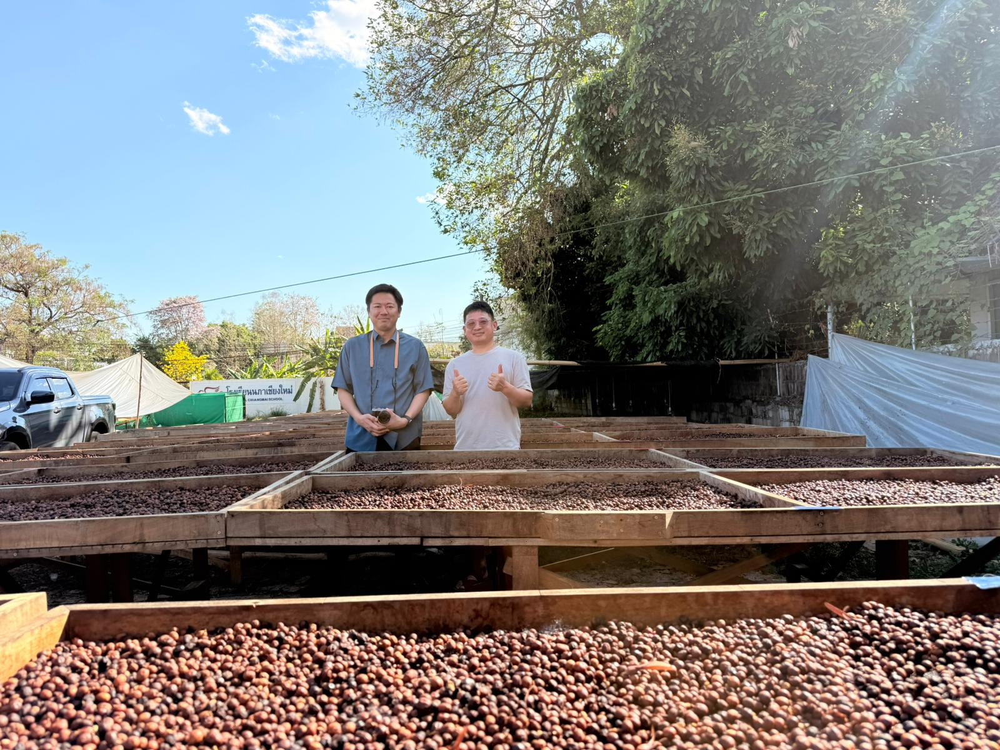

タイ・チェンマイ産スペシャルティコーヒー
Specialty Green Coffee Trading — Yokohama, Japan
タイ北部チェンマイの山岳地帯、標高1,300〜1,350m。少数民族の農家が完熟チェリーのみを手摘みで収穫するマイクロロット。
農園主ヨス氏は独自の発酵技術で全7種のプロセスを展開する精製のイノベーター。従来のタイコーヒーのイメージを覆す、クリーンかつ複雑なフレーバーを実現しています。
完熟チェリーを手摘みした後、果肉を除去し、水に浸けて発酵させる伝統的なウォッシュプロセス。Yosniyom農園では複数回の洗浄を経て、クリーンで明るい酸質を引き出しています。
Yosniyom農園は独自の発酵技術で全7種のプロセスを展開。その中から日本市場に最適な3種を選定しました。
価格・お取引条件はお問い合わせください。最小ロット5kg（真空パック1袋）から。
2026年限定ロット — 年間入荷量600kg、なくなり次第終了。

日系メーカーで16年間、BtoB製品の海外営業・海外マーケティングに従事。シンガポール・中国駐在を経て、その経験とネットワークを活かし、東南アジアのスペシャルティコーヒー農園と日本のロースターを直接つなぐ事業を開始。
Yosniyom農園（タイ・チェンマイ）の日本総代理店として、2026年6月より日本市場へタイのスペシャルティコーヒー生豆の販売を開始。今後はベトナム・インドネシアの農園にも展開予定。